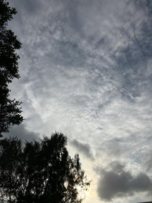
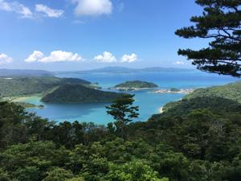

うるがいの話 ある日
最新: 天空のレストラン【うるがいの話 ある日】とは 一日だけのプログです
『うるがいの話』の最新一日だけのプログで、通信料が少なく経済的だ。カニの画像をクリックすると全ての日付が載る『うるがいの話』サイトを表示します
|
|
【うるがいの話】 うるがい(ｳﾙｶﾞｲ urugai)とは、『もずくがに』の名前でとても大きくなります。 |
|---|---|
|
|
【カミマヤーの話】 猫のことを方言でマヤーといいます。カミマヤー（kamimayaa）とは、神の猫のことです。 |
|
【たながぁの音楽】 たながぁ（ﾀﾅｶﾞｰ tanagaa）とは手長えびのことで、何種類かあり大きいのは車 エビぐらいになります。 |

|
【ぶながぁの話】 ぶながぁ(ﾌﾞﾅｶﾞｰ bunagaa)とは、赤い髪の毛、赤い身体、そして身長は１ｍ２０ｃｍ ぐらい、川の蟹を食べているの目撃された。場所は沖縄県国頭郡大宜味村のと ある村僕の隣近所に住んでいる爺さんから、聞いた話です。 |
|
|
【ギーマの話】 ギーマ(giima)とは、山原の里山に咲くスズランに似た、 花を付けます。実は食べられます、 気が付くと口の周りが紫になっています。 |
2025年10月27日 (月）天空のレストラン
15:51

「天空のレストラン行ってみるか？」と７１歳の誕生日を前にし
た私に夫が言う。以前行って食事をした場所でる。夫はネットで
レストランのことを調べたが、今は閉店している様子。でも山頂
からの景色を見られるのならと、出掛けることにした。ついてみ
るとシャッターが下りていて山頂へは行けない。展望台は背丈以
上に伸びた雑草と木々で雄大なパノラマも見られず残念な結果と
なった。（琉球新報社の投稿より）
未解決事件：「Ｆｉｌｅ．０３」は地面師詐欺事件を追う被害額
５５億（NHKの番組）を見る、天空のレストランは、元は近くに
あった友善ホテル（妹の結婚式をした＆同級生が働いていた場所）
のオーナーが、住んでいた住宅を、なぜか妹の旦那さんの家族が
住んでいた。写真は、そこから２０１８年８月５日に撮った。

いつの間にか、天空のレストランになってしまった。そして、レ
ストランは去年（２０２４年８月３１日）に廃業した。テレビの
番組をみて、きな臭さを感じた。ただ、そこは地域の神聖な場所
なので、商売には向かない場所と個人的には思う。